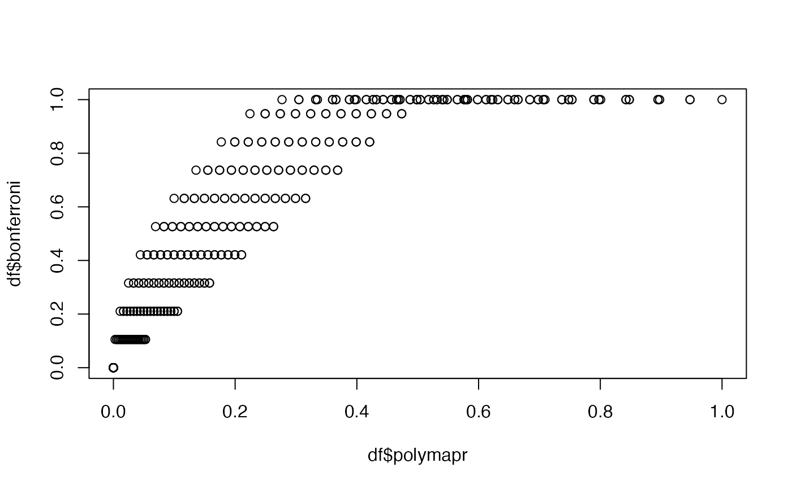

Jointly tests for segregation distortion and number of incompatible genotypes
Source:R/overall.R
otest_g.RdThis is experimental. I haven't tested it out in lots of scenarios yet.
Usage
otest_g(
x,
g1,
g2,
pbad = 0.03,
drbound = 1/6,
pp = TRUE,
dr = TRUE,
alpha = 0,
xi1 = 1/3,
xi2 = 1/3
)Arguments
- x
A vector of genotype counts.
x[i]is the number of offspring with genotypei-1.- g1
The genotype of parent 1.
- g2
The genotype of parent 2.
- pbad
The upper bound on the number of bad genotypes
- drbound
The maximum rate of double reduction. A default of 1/6 is provided, which is the rate under the complete equational segregation model of meiosis.
- pp
A logical. Should we account for preferential pairing (
TRUE) or not (FALSE)?- dr
A logical. Should we account for double reduction (
TRUE) or not (FALSE)?- alpha
If
dr = FALSE, this is the known rate of double reduction.- xi1
If
pp = FALSE, this is the known preferential pairing parameter of parent 1.- xi2
If
pp = FALSE, this is the known preferential pairing parameter of parent 2.
Value
A list with the following elements
statisticThe log-likelihood ratio test statistic.
dfThe degrees of freedom.
p_valueThe Bonferroni corrected p-value.
p_lrtThe p-value of the LRT.
p_binomThe p-value of the one-sided binomial test.
alphaThe estimated double reduction rate.
xi1The estimated preferential pairing parameter of parent 1.
xi2The estimated preferential pairing parameter of parent 2.
Details
Here, we test if the compatible genotypes are consistent with F1 populations and separately test that the number of incompatible genotypes isn't too large (less than 3 percent by default). This is the strategy the polymapR software uses. But we use a Bonferroni correction to combine these tests (minimum of two times the p-values), while they just multiply the p-values together. So our approach accounts for double reduction and preferential pairing, while also controlling the family-wise error rate.
Examples
# Run a test where genotypes 0, 1, and 2 are possible
x <- c(10, 10, 4, 0, 5)
otest_g(x = x, g1 = 1, g2 = 0)
#> $statistic
#> [1] 5.843033
#>
#> $p_value
#> [1] 0.003160357
#>
#> $df
#> [1] 2
#>
#> $alpha
#> [1] 0.1666667
#>
#> $xi1
#> [1] NA
#>
#> $xi2
#> [1] NA
#>
#> $p_binom
#> [1] 0.001580178
#>
#> $p_lrt
#> [1] 0.05385196
#>
# polymapR's multiplication and the Bonferroni differ
df <- expand.grid(p1 = seq(0, 1, length.out = 20), p2 = seq(0, 1, length.out = 20))
df$polymapr <- NA
df$bonferroni <- NA
for (i in seq_len(nrow(df))) {
df$polymapr[[i]] <- df$p1[[i]] * df$p2[[i]]
df$bonferroni[[i]] <- 2 * min(c(df$p1[[i]], df$p2[[i]], 0.5))
}
graphics::plot(df$polymapr, df$bonferroni)
